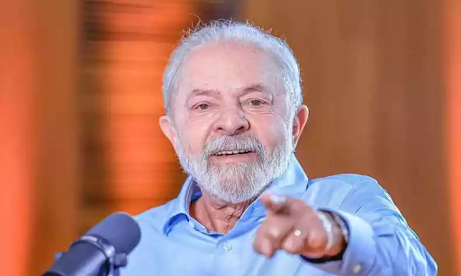

Experts predict that the Ministry of the Environment will have to fight deforestation in a warlike manner due to the increase in crime and impunity in the Amazon and the paucity of resources left over from previous president Bolsonaro's administration.

The length of time it took to reveal the identity of the new head of the Ministry of the Environment is said to be a hint of the formidable obstacles that Luiz Inácio Lula da Silva, the elected president, will encounter in his future administration. The official announcement has not yet occurred, despite Marina Silva, a former minister and current federal deputy elected for São Paulo, being the front-runner.
The increase of organized crime and deforestation in the Amazon will be Jair Bolsonaro's legacy, and managing it will present significant challenges due to a lack of funding and a staffing shortfall in environmental control agencies.
The first steps the Ministry of the Environment plans to take must show efficacy and a sincere commitment to following the law in the face of a disjointed environmental strategy and stalled, weak oversight organizations.
In previous governments, Lula has given great focus to the environment, establishing deals with Indigenous groups and limiting farmers for the sake of the environment. He has already declared that he plans to expand his environmental legacy and protect these issues throughout his tenure.
Everyone agrees that stopping deforestation should be a top priority, but there is still uncertainty about other related problems including climate change, energy, and agriculture.
Climate change is more than just an environmental issue. It's economic, offering Brazil's industry and development a chance. It will be difficult for the Ministry of the Environment to spearhead this effort and bring together the business community, academic institutions, and civil society.
In conclusion, Lula's history of prioritizing the environment, collaborating with Indigenous groups, and implementing regulations showcases a commitment to environmental conservation. Despite challenges inherited from the previous administration, his declared intention to expand on these efforts is promising. Recognizing the economic potential in addressing climate change, Lula's leadership may bring positive change by rallying diverse sectors. The urgent focus on deforestation remains, and uncertainties persist regarding related issues like climate, energy, and agriculture. Nevertheless, there is optimism that Lula's presidency could signify a more proactive and collaborative approach to Brazil's environmental challenges.